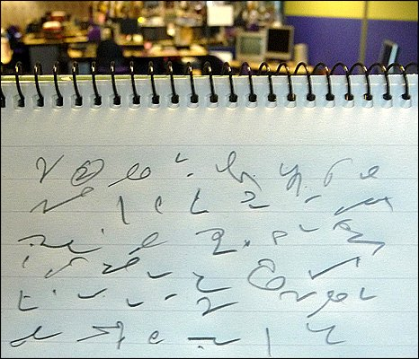
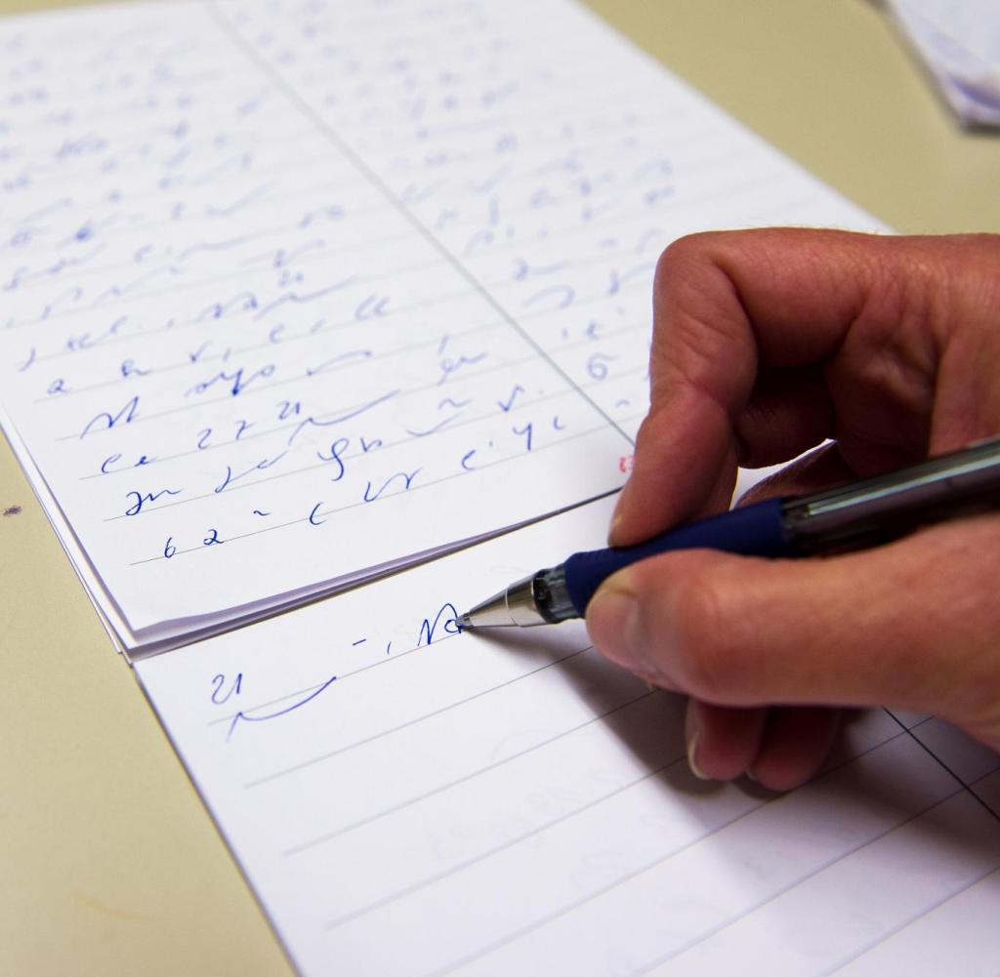
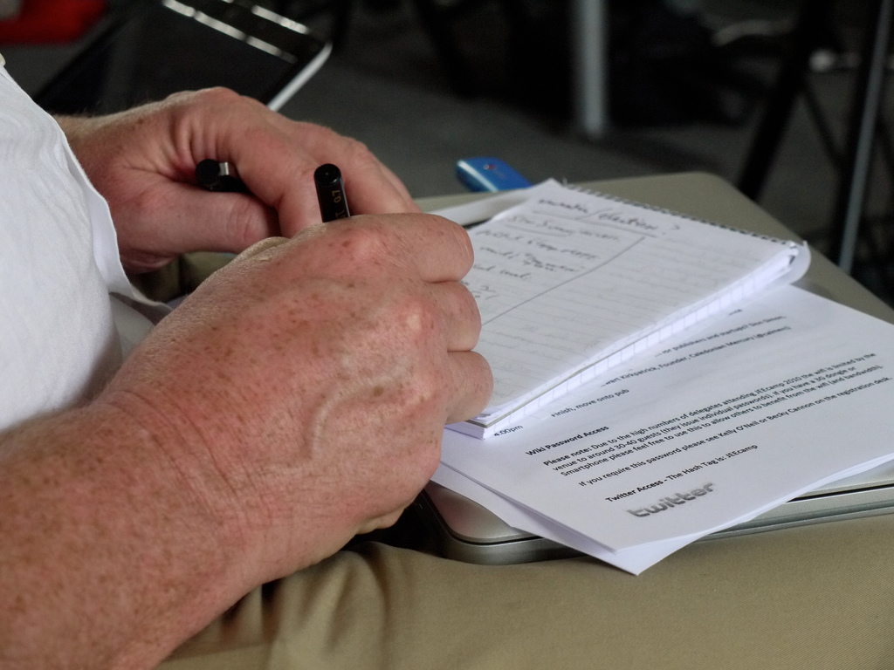
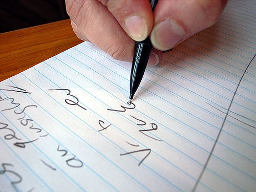
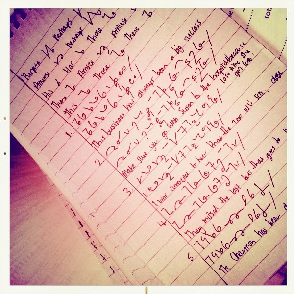

International
InternationalStenografia w dziennikarstwie
2012-03-05 | autor: flamenco108Oto zagadka dla Szanownych Czytelników (bo komentarz jest zbędny): z którego roku, z jakiej epoki, pochodzi poniżej zacytowany artykuł?

Każdy dziennikarz powinien umieć stenografować.
Jedną z dziedzin życia, gdzie znajduje zastosowanie stenografia, jest dziennikarstwo. Uwagi niniejsze chcę poświęcić zastosowaniu stenografii w dziennikarstwie, to jest określić rodzaj pracy dziennikarskiej i odpowiedzieć na pytanie, w jaki sposób stenografia staje się przydatną w dziennikarstwie, czy jest potrzebna i jakie oddaje usługi. Pomijając więc zastosowanie stenografii w biurach, parlamentach, na wykładach i posiedzeniach, zastanówmy się nad dwoma rodzajami pracy dziennikarskiej, którymi są: wywiady i odbiór telefonogramów.
Wywiad jest rozmową prowadzoną pomiędzy dziennikarzem a osobą, która z racji zajmowanego stanowiska może udzielić interesujących informacji z dziedziny zagadnień aktualnych. Wywiad odbywa się w ten sposób, że osoba udzieląjąca wywiadu opowiada sama o danej sprawie względnie odpowiada na stawiane pytania. Dziennikarz odbierający wywiad i umiejący stenografować zaoszczędza bardzo dużo czasu. Wywiad zyskuje na wyrazistości, bo dziennikarz wróciwszy do redakcji opracowuje go, opierając się na obszernym materiale, jakim jest dosłownie zapisana rozmowa. Może użyć więcej zwrotów i słów, kórych użyła osoba udzielająca wywiadu i odtworzyć go, opierając się na całej rozmowie, anie na poszczególnych fragmentach, kóre tylko może zanotować posługując się zwykłym pismem. Korzyści są jasne. Pismo stenograficzne, podążające za żywą mową, przyczynia się do dokładności wywiadu, zaoszczędza wiele czasu, dając w rezultacie artykuł, prawdziwie odtwarzający prowadzoną rozmowę.

Praca stenografa-telefonisty polega na przyjmowaniu telefonem wiadomości dla ajencji i dzienników. W pierwszym rzędzie wymaga sięod stenografa-telefonisty wielkiej biegłości w stenografowaniu. Przysłowie “Czas to pieniądz” posiada przy tej pracy szczególne znaczenie, ponieważ opłata za międzymiastowe rozmowy telefoniczne, odbywające się na dużą odległość, stanowi poważne obciążenie budżetu ajencji lub wielkiego dziennika. W Polsce, gdzie linie telefoniczne są przeciążone rozmowani telefonicznymi, trudno jest uzyskiwać rozmowy na dłuższy przeciąg czasu. Specjalnie zależy więc na tem, aby stenografowie-telefoniści posiadali dużą biegłość, gdyż tylko w takim razie i zasada oszczędności i zasada szybkiego dostarczania wiadomości do druku będą mogły być wcielone w życie. Poza biegłością i sprawnością stenograf-telefonista jako dziennikarz musi się orientować we wszystkich zagadnieniach bieżącyhc, politycznych i ekonomicznych, znać języki, gdyż to znakomicie ułatwia mu pracę zawodową. Poza tymi umiejętnościami nabytymi, szczególny rodzaj pracy dziennikarskiej przy telefonie wymaga przymiotu naturalnego, to jest dobrego słuchu, który rzecz prosta, jest niezbędny przy tego rodzaju pracy.

W Niemczech nie wyobrażają sobie zupełnie dziennikarza bez znajomości stenografii. Mniejsze dzienniki niemieckie nie robią różnicy między redaktorem a stenografem, wymagają one od redaktorów znajomości stenografii i na odwrót. Wielkie natomiast dzienniki posiadają biura złożone z 3-10 stenografów. Jednakże duże wymagania, jakie są stawiane stenografowi-telefoniście, sprawiają, że zapotrzebowanie na stenografów-telefonistów nawet w Niemczech nie znajduje zupełnego pokrycia. Skutkiem tego praca stenografów-telefonistów przetworzyła się we wszystkich krajach Zachodniej Europy i w Amerycie na bardzo dobrze płatny zawód. Bardzo częste są wypadki, że stenograf-telefonista otrzymuje wynagrodzenie większe niż redaktor. Ciekawym faktem w dziennikarstwie niemieckim jest ścisła współpraca “Niemieckiego Związku Prasowego”, obejmującego dziennikarzy zawodowych, z niemieckim “Związkiem Stenografów Dziennikarskich”, do którego należą stenografowie pracujący w ajencjach i dziennikach. Fakt ten dowodzi, że prasa XX wieku nie może obejść się bez stenografii i że stenografia wywalczyła sobie w całym świecie cywilizowanym słusznie należne jej stanowisko.

Jak się przedstawia sprawa znajomości stenografii wśród dziennikarzy polskich? Musimy stwierdzić, że dziennikarz w Polsce, znający stenografię, jest białym krukiem. Jeszcze w Małopolsce, gdzie uczono w szkołach i na uniwersytetach, którzy umieją stenografować. Natomiast w Kongresówce i na kresach wschodnich sprawa przedstawia się rozpaczliwie. Sądzimy jednak, że w Polsce nauka stenografii ogarniająca obecnie coraz szersze kręgi, przyczyni się do tego, żę za kilka lat, kiedy do polskiej prasy wejdą młode siły, położenie ulegnie zmianie na lepsze. Pożądane byłoby wprowadzenie obowiązkowego nauczania stenografii w szkołach średnich i uczelniach wyższych.

Pod względem służby telefoniczno-stenograficznej w Polsce sprawa przedstawia się znacznie lepiej. Dwie wielkie ajencje dziennikarskie: Ajencja Wschodnia (A.W.) oraz Polska Ajencja Telegraficzna (P.A.T.) zatrudniają w centralach w Warszawie i oddziałach prowincjonalnych około 50 stenografów, w czym według przeprowadzonej ankiety około 95% Gabelsberczyków, którzy pod względem sprawności stoją na wysokości zadania. Organizacja służby telefoniczno-stenograficznej w ajencjach jest doskonała i nie ustępuje zupełnie niemieckiej. Kończę słowami przytoczonymi na początku: Każdy dziennikarz powinien umieć stenografować. Niechaj każdy, kto zamierza poświęcić się pracy dziennikarskiej koniecznie nauczy się stenografii. Dążeniem dziennikarzy polskich powinno być podniesienie prasy polskiej do poziomu zachodnio europejskiego. Bierzmy wzór z udoskonaleń technicznych, jakie stosuje prasa na Zachodzie. W ten sposób dźwigniemy prasę polską i uczynimy z niej sprawniedziałającą gałąź życia społecznego.
Rudolf Wojnar student Wyższej Szkoły Handlowej
2012-03-05 autor: flamenco108